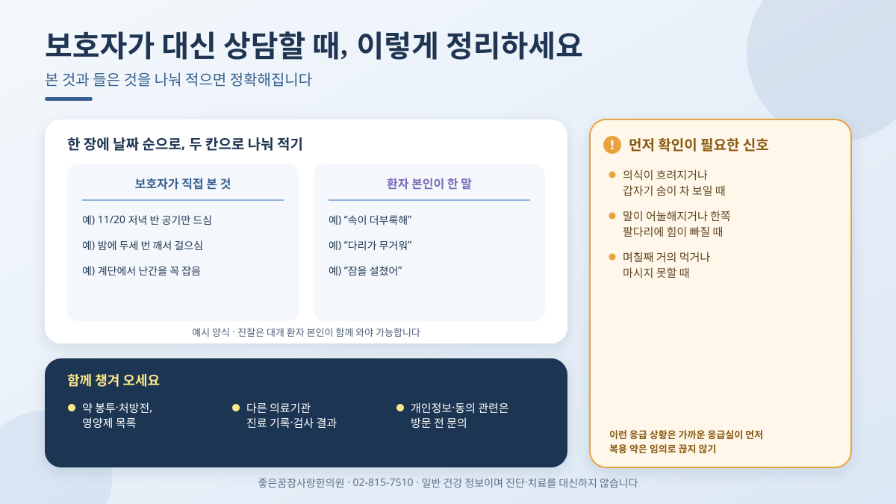

이종호 한의사 감수좋은꿈참사랑한의원 대표원장 (한의사 면허번호 19769)발행 2026-11-23 · 수정 2026-11-25
이 글의 차례
어르신이나 아이처럼 환자가 직접 설명하기 어려울 때는 보호자가 대신 상담을 이어 가기도 합니다. 이때 가장 중요한 것은 본 것과 들은 것을 구분해 날짜 순으로 전하는 것이며, 진찰은 대개 환자 본인이 함께 와야 가능합니다. 보호자만 상담하거나 약을 대신 받는 일이 가능한지는 상황에 따라 달라 방문 전 전화(02-815-7510)로 확인해 주세요.
왜 정리해서 전하면 좋을까요
- 보호자가 본 모습과 환자가 느끼는 정도가 다를 수 있어 둘을 구분해야 정확합니다.
- 기억에만 의존하면 시작 시점이나 약 이름이 빠지기 쉽습니다.
- 여러 가족이 돌보는 경우 사람마다 전하는 내용이 달라 혼선이 생기기도 합니다.
- 변화가 서서히 생기면 언제부터인지 흐려지기 쉬워 날짜 메모가 도움이 됩니다.
자주 하는 오해
- 보호자가 증상을 잘 알고 있으니 환자 본인은 오지 않아도 된다고 여기기 쉽지만, 진맥과 진찰은 환자 본인을 직접 살펴야 해서 대개 함께 오셔야 합니다.
- 환자가 말을 잘 못하니 보호자 설명만 들으면 된다고 생각하기 쉽지만, 짧은 한마디나 표정에도 중요한 정보가 있어 본인의 말도 함께 듣습니다.
- 자세히 말할수록 좋다고 여겨 길게 설명하기 쉽지만, 날짜와 변화 중심으로 핵심만 정리하는 편이 오히려 정확하게 전달됩니다.
- 가족 가운데 누가 와도 상관없다고 생각하기 쉽지만, 평소 가장 가까이에서 돌보는 분이 함께 오셔야 생활 속 변화를 자세히 들을 수 있습니다.
예를 들면 이런 경우입니다
- 예를 들어 식사량이 줄어든 어르신을 모시고 오는 자녀라면, 최근 2주 동안 끼니마다 드신 양을 대략 적어 오시면 변화를 함께 살피기 쉽습니다.
- 예를 들어 배가 아프다고 자주 말하는 어린 자녀를 둔 부모라면, 아프다고 한 시각과 그 전에 먹은 것, 배변 상태를 날짜별로 적어 오세요.
- 예를 들어 형제가 번갈아 부모님을 돌보는 경우라면, 가족끼리 메모 한 장을 함께 쓰고 진료 때는 그 메모를 가져오시면 사람마다 말이 달라지는 혼선을 줄일 수 있습니다.
먼저 이렇게 여쭙니다
- 언제부터, 어떻게 불편해 보이셨나요?
- 직접 보신 변화와 환자분이 말한 내용은 각각 무엇인가요?
- 복용 중인 약과 최근 바뀐 약이 있나요?
- 식사량, 잠, 대소변에 달라진 점이 있나요?
스스로 점검해 보세요
보호자로서 방문 전에 아래 항목을 확인해 보세요.
- 증상이 시작된 날과 그 뒤 달라진 점을 날짜 순으로 적었다
- 직접 본 것과 환자에게 들은 것을 나누어 적었다
- 복용 중인 약 봉투나 약 목록, 영양제 이름을 챙겼다
- 다른 의료기관 진료 기록이나 검사 결과가 있다면 챙겼다
- 보호자 상담, 대리 처방 가능 여부와 필요한 서류를 전화로 확인했다
- 환자 본인이 함께 올 수 있는 날과 이동 방법을 정해 두었다
여러 가족이 함께 돌본다면 이 목록을 가족 단체 대화방에 공유해 두고, 진료에 동행하는 분이 최종 메모를 챙기도록 정해 두세요. 진료 뒤 들은 내용도 같은 메모에 이어 적어 두면 다음 방문 때 그 사이 변화를 한눈에 보며 이야기를 이어 갈 수 있습니다.
오시는 길과 진료 시간
- 상도역 3번 출구로 나와 약 200m 직진한 뒤, 오거리에서 우회전해 약 200m 오시면 됩니다.
- 노량진역 쪽에서는 3번 출구에서 마을버스 동작01을 타고 신동아리버파크에서 내리시면 됩니다.
- 진료 시간은 평일 09:30~20:00(점심 13:00~14:00), 토·일·공휴일 09:30~15:00입니다. 휠체어 이동이나 주차가 필요하다면 방문 전 전화로 확인해 주세요.
방문 전에 먼저 해 볼 수 있는 것
- 변화를 날짜 순으로 한 장에 정리하기
- 직접 본 것과 환자가 한 말을 따로 적기
- 약 봉투나 처방전, 다른 의료기관 진료 기록 챙기기
- 환자 본인이 표현한 말을 그대로 옮겨 적기
한의원에서 함께 살필 수 있는 경우
- 식사량이 줄고 기운이 없어 보일 때 식사와 소화 상태를 함께 묻습니다.
- 밤에 자주 깨거나 낮에 졸음이 많을 때 하루 생활 리듬을 함께 살핍니다.
- 걷거나 일어서는 동작이 불편해 보일 때 움직이는 모습을 함께 살핍니다.
좋은꿈참사랑한의원에서는 보호자의 설명과 환자 본인의 이야기를 함께 듣고, 진찰은 환자 본인을 직접 살펴 진행합니다. 모든 분께 진맥을 하고 필요하다고 판단될 때 설진 등을 더해 몸 상태를 확인하며, 귀가 전에는 집에서 보호자가 지켜볼 점을 함께 정리해 드립니다.
첫 방문이라면 보호자와 환자 본인에게 불편한 점을 차례로 여쭙는 문진으로 시작합니다. 이어서 진맥을 하고, 체성분 변화나 혈당 관련 수치가 궁금한 경우처럼 필요하다고 판단되면 인바디 770이나 당화혈색소 검사기 등 장비로 확인합니다.
보호자가 적어 오신 날짜별 메모를 함께 보고, 오늘 할 치료와 그 이유, 집에서 지켜볼 점과 다음 방문 때 확인할 내용을 설명해 드립니다.

언제 지켜보고, 언제 바로 진료받을까요
- 식사량이나 잠이 조금 달라진 정도라면 일주일가량 날짜별로 적으며 지켜보세요.
- 2주 넘게 식사량이 계속 줄거나 체중이 눈에 띄게 빠지면 상담을 받아 보세요.
- 갑자기 말이 어눌해지거나 의식이 흐려지면 기다리지 말고 바로 응급실로 가세요.
이렇게 기록해 오시면 상담이 쉬워집니다
- 날짜별 변화 메모
- 복용 약 목록과 영양제
- 다른 의료기관 진료 내용과 검사 결과
- 개인정보나 동의가 필요한 부분은 방문 전에 문의
이런 증상은 먼저 확인이 필요합니다
- 의식이 흐려지거나 갑자기 숨이 차 보이는 경우
- 갑자기 말이 어눌해지거나 한쪽 팔다리에 힘이 빠지는 경우
- 며칠째 거의 먹거나 마시지 못하는 경우
이런 응급 상황은 응급실이 먼저입니다. 복용 중인 약은 처방한 의사와 상의 없이 줄이거나 끊지 않습니다.
함께 읽으면 좋은 글
- 혼자 한의원에 오시는 어르신은 접수와 진료 때 무엇을 준비하면 되나요?
- 가족과 함께 처음 방문할 때는 무엇을 준비하면 좋을까요?
- 가족을 돌보느라 지칠 때는 어떻게 하나요?

여쭙는 것
- 언제부터, 어떻게 불편해 보이셨나요?
- 직접 보신 변화와 환자분이 말한 내용은 각각 무엇인가요?
- 복용 중인 약과 최근 바뀐 약이 있나요?
한의원에서 함께 살필 것
- 식사량이 줄고 기운이 없어 보일 때 식사와 소화 상태를 함께 묻습니다.
- 밤에 자주 깨거나 낮에 졸음이 많을 때 하루 생활 리듬을 함께 살핍니다.
- 걷거나 일어서는 동작이 불편해 보일 때 움직이는 모습을 함께 살핍니다.
먼저 확인이 필요한 신호
- 의식이 흐려지거나 갑자기 숨이 차 보이는 경우
- 갑자기 말이 어눌해지거나 한쪽 팔다리에 힘이 빠지는 경우
- 며칠째 거의 먹거나 마시지 못하는 경우
한눈에 보는 표
| 구분 | 핵심 |
|---|---|
| 여쭙는 것 | 언제부터, 어떻게 불편해 보이셨나요? 직접 보신 변화와 환자분이 말한 내용은 각각 무엇인가요? |
| 한의원에서 함께 살필 것 | 식사량이 줄고 기운이 없어 보일 때 식사와 소화 상태를 함께 묻습니다. 밤에 자주 깨거나 낮에 졸음이 많을 때 하루 생활 리듬을 함께 살핍니다. |
| 먼저 확인이 필요한 신호 | 의식이 흐려지거나 갑자기 숨이 차 보이는 경우 갑자기 말이 어눌해지거나 한쪽 팔다리에 힘이 빠지는 경우 |
자주 묻는 질문
환자 없이 보호자만 가도 되나요?
진찰이 필요하므로 보통 환자 본인의 방문이 필요합니다. 가능한 방식은 방문 전에 문의해 주세요.
다른 병원 서류도 함께 가져가야 하나요?
있으면 상담에 도움이 되므로 최근 진료 내용이나 검사 결과를 챙겨 가시기를 권합니다.
메모는 길게 써야 하나요?
길 필요는 없고 날짜 순으로 핵심만 적어도 충분합니다.
보호자가 대신 약을 받아 갈 수 있나요?
상황과 필요한 서류에 따라 달라질 수 있으므로 방문 전 전화(02-815-7510)로 먼저 확인해 주세요.
좋은꿈참사랑한의원은 재진 때 지난번 이야기부터 이어서 여쭙니다. 진료시간과 예약은 오시는 길에서 확인하세요.
어디서 상담받을 수 있나요?
좋은꿈참사랑한의원은 서울 동작구 만양로2길 2 신성빌딩 3층·5층(서울 동작구 상도동, 7호선 상도역 3번 출구 근처)에 있습니다. 한의사 3명(이종호 대표원장, 조영기 수석진료원장, 정원영 진료원장)이 진료합니다. 진료시간은 평일 09:30~20:00(점심 13:00~14:00), 토·일·공휴일 09:30~15:00이며, 방문 전 전화로 확인을 권합니다. 예약은 네이버 예약, 카카오톡 상담, 전화 02-815-7510로 받습니다.
이 글은 일반적인 건강 정보이며 개인의 진단이나 치료를 대신하지 않습니다. 증상이 있거나 복용 중인 약이 있다면 진료를 통해 확인하세요. 치료 효과는 개인마다 다를 수 있습니다.
작성 기준: 일반적으로 알려져 있는 건강 정보를 참고해 정리했습니다(대표원장 감수). 증상 기록은 1~2주 동안 하루 1회, 비슷한 시간에 적어 오시면 지난 상태와 비교하기 쉽습니다.